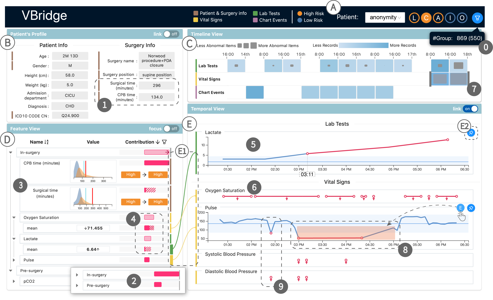
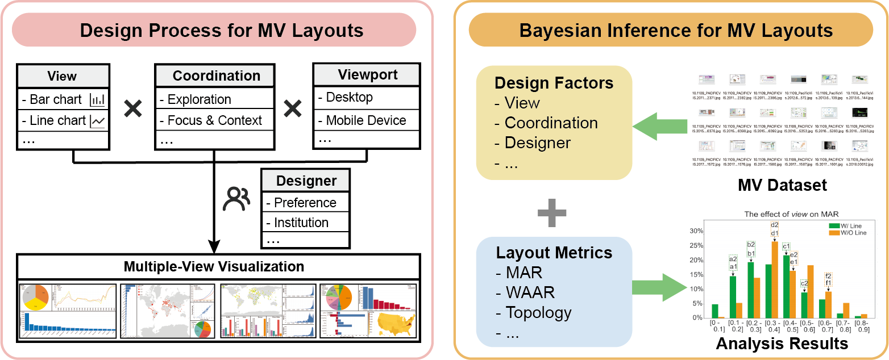
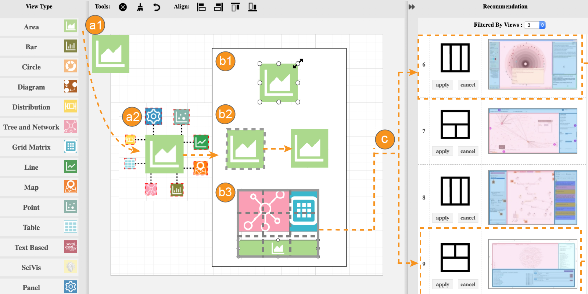

|  |
VBridge: Connecting the Dots Between Features and Data to Explain Healthcare Models Furui Cheng, Dongyu Liu, Fan Du, Yanna Lin, Alexandra Zytek, Haomin Li, Huamin Qu, and Kalyan VeeramachaneniIEEE Transactions on Visualization and Computer Graphics (Proc. IEEE VAST 2021) Accepted [Paper] [Github Code] |
 |
Modeling layout design for multiple-view visualization via Bayesian inference Lingdan Shao, Zhe Chu, Xi Chen, Yanna Lin & Wei Zeng Journal of Visualization (ChinaVis 2021 Best Paper Nomination)Accepted [Paper] [Homepage] |
|  |
Composition and Configuration Patterns in Multiple-View Visualizations Xi Chen, Wei Zeng, Yanna Lin, Hayder Mahdi Al-maneea, Jonathan Roberts, Remco ChangIEEE Transactions on Visualization and Computer Graphics (Proc. IEEE InfoVis 2020) Accepted [Paper] [Homepage] |